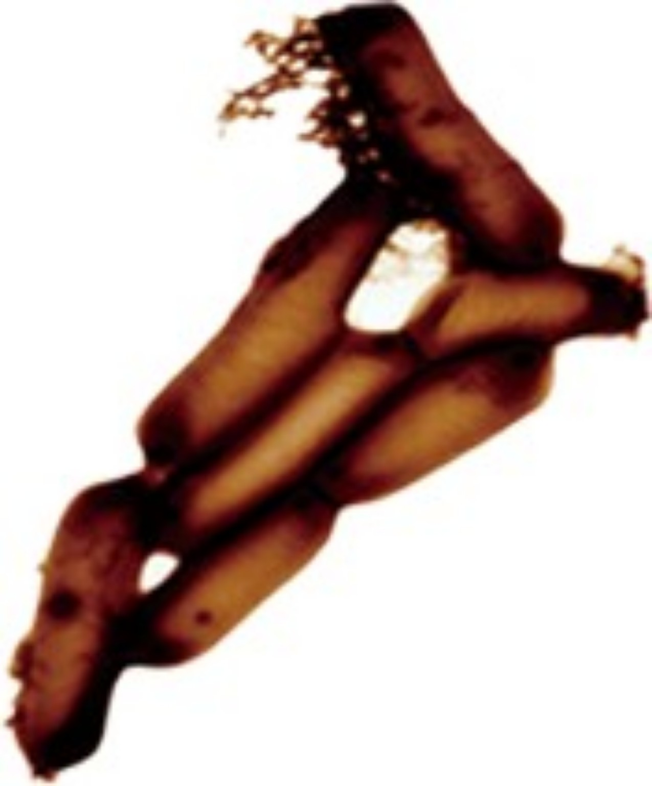

公正 Fairness
不因研究結果有利或不利而改變呈現原則。
PROBIOTIC SCIENCE · OPEN EVIDENCE
原生益菌科學資訊與知識平台
讓益生菌科學，更容易理解，也更容易查證。
我們以公正、公開、誠信及系統化的方法，整理 TCELL-1 與益生菌相關科學資訊，協助一般大眾理解研究發現、研究限制，以及目前證據真正能告訴我們什麼。
本平台提供科學與健康教育資訊，不取代醫療專業人員的診斷、治療或個別醫療建議。

OUR EDITORIAL PRINCIPLES
不因研究結果有利或不利而改變呈現原則。
重要科學資訊盡可能附上可追溯的原始研究或可靠來源。
不誇大、不斷章取義，不把初步發現描述為確定療效。
讓讀者能回到原始資料，自行檢視我們如何理解證據。
真正的公信力，不是來自我們的結論，
而是來自任何人都能檢驗我們如何得到這個結論。
ABOUT TCELL-1
這一區將整理 TCELL-1 的菌株背景、既有資料、研究歷程與可查證來源。
首頁 v2.0 不預先宣稱特定健康功效。凡涉及菌株分類、來源、特性或人體健康效果的敘述，都應在核對原始資料後再正式刊登。
PROBIOTIC 101
以一般人看得懂的語言，說清楚常見概念，並在需要時提供深入來源。
RESEARCH & EVIDENCE
不替研究打星等；用一致的 Evidence Card 幫助讀者理解研究內容與限制。
Human / Animal / Laboratory / Review
這項研究想回答什麼？
研究實際觀察到什麼？
這篇研究還不能證明什麼？
用一般讀者能理解的方式，區分「研究結果」與「合理解讀」，避免超出證據範圍。
EVIDENCE LIBRARY
第一批文獻完成核對後，才會正式上線；不以未查證摘要填補空白。
HEALTH TOPICS
分類代表網站整理的研究主題，不代表 TCELL-1 對該健康議題具有已證實療效。
Gut & Digestive Science
Human Microbiome
Immunity Research
Nutrition & Probiotics
Healthy Aging
SCIENCE INTEGRITY
FAQ
網站定位為科學資訊與知識平台。產品背景資訊可以被介紹，但研究內容、健康教育與來源查證應與銷售訴求分開。
不會。不同研究的對象、菌株、劑量、研究設計與結果都可能不同；網站會說明目前證據支持到哪裡，以及還有哪些不確定性。
不代表。人體研究仍需要理解研究設計、樣本數、結果、限制與是否有其他研究支持。
CORRECTIONS & CONTACT
未來每篇研究文章都將標示 Sources、Last reviewed 與 Corrections。經確認後的修訂會留下日期、內容與原因。